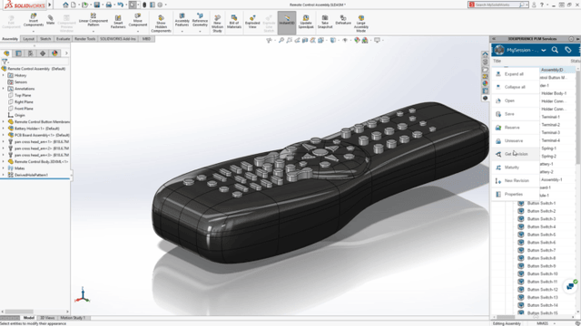
SOLIDWORKS
SOLIDWORKS est un logiciel de conception assistée par ordinateur permettant de créer des modèles et des assemblages en 3D. Il aide les concepteurs à développer et à tester virtuellement leurs produits.

SOLIDWORKS est un logiciel de conception assistée par ordinateur permettant de créer des modèles et des assemblages en 3D. Il aide les concepteurs à développer et à tester virtuellement leurs produits.
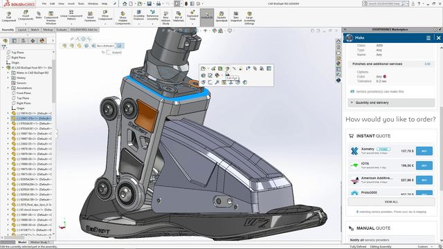
3DEXPERIENCE est une plateforme collaborative qui rassemble les données, les outils et les équipes d'un projet. Elle facilite la conception, la simulation et le partage d'informations tout au long du développement d'un produit.
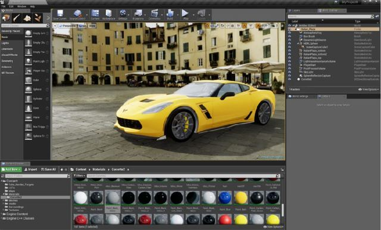
3DEXCITE transforme les données 3D des produits en présentations visuelles réalistes. Ces outils servent notamment à créer des contenus marketing et des expériences immersives.
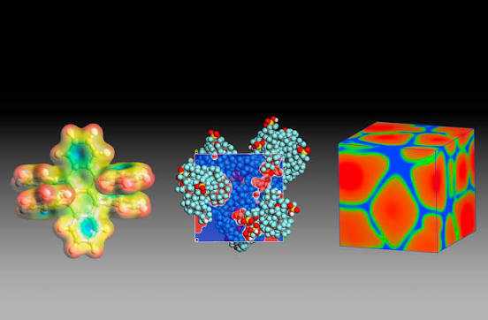
BIOVIA propose des solutions de modélisation et de simulation scientifiques. Elles permettent aux chercheurs d'étudier les molécules, les matériaux et les processus biologiques afin d'accélérer l'innovation.
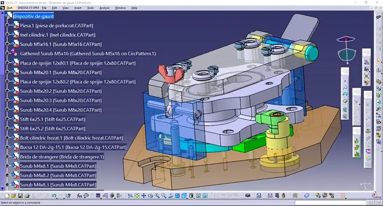
CATIA est un logiciel de conception assistée par ordinateur (CAO) utilisé pour concevoir des produits complexes en 3D. Il est notamment employé dans l'aéronautique, l'automobile et l'industrie.
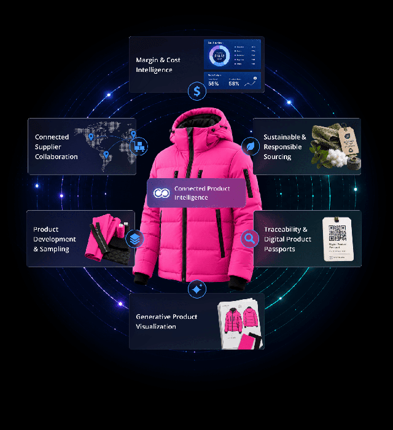
Centric PLM aide les entreprises à gérer le développement de leurs produits, de la conception à la commercialisation. La solution facilite la collaboration et le suivi des collections, notamment dans la mode et la distribution.
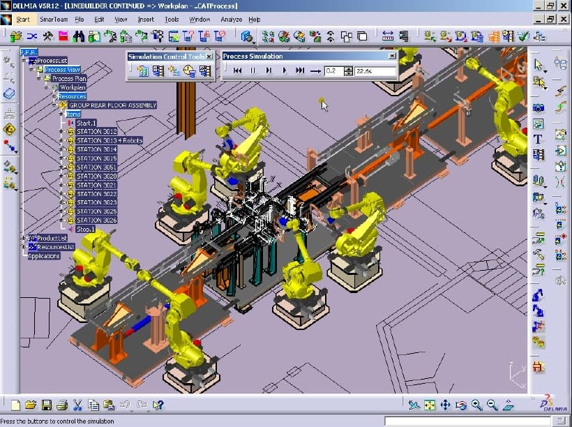
DELMIA permet de simuler et d'optimiser les processus de fabrication. Les industriels peuvent ainsi planifier leur production, améliorer leur efficacité et réduire les erreurs.
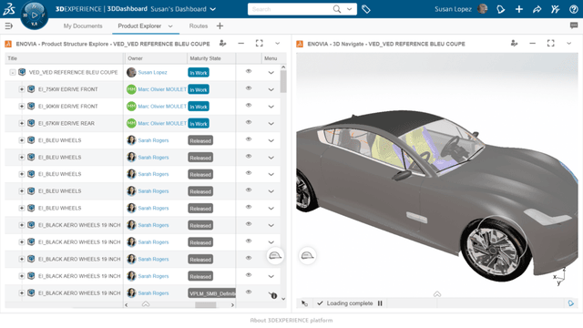
ENOVIA facilite la gestion du cycle de vie des produits et le travail collaboratif. La solution centralise les données techniques et aide les équipes à coordonner leurs projets.
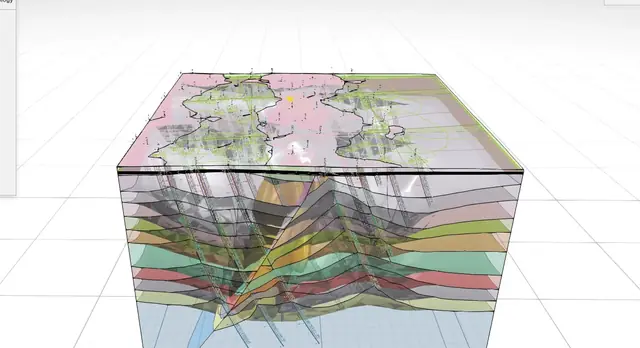
GEOVIA propose des outils de modélisation géologique et de planification minière. Ils aident les professionnels à analyser les ressources naturelles et à mieux préparer leurs projets d'exploitation.
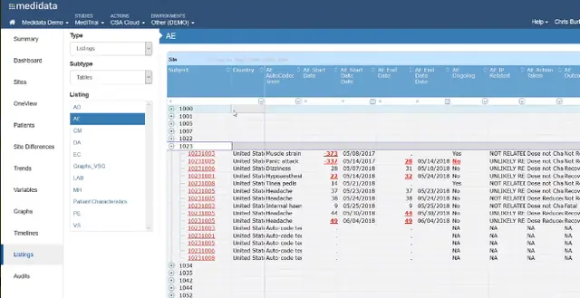
Medidata fournit des solutions numériques pour la recherche clinique. Sa plateforme aide les laboratoires à organiser les essais cliniques, gérer les données des patients et accélérer le développement de traitements.
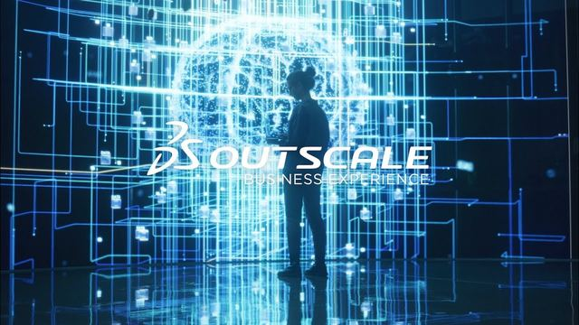
OUTSCALE fournit des infrastructures cloud sécurisées pour héberger et traiter des données. Ses solutions répondent notamment aux besoins des entreprises et des organisations qui recherchent une meilleure maîtrise de leurs informations.
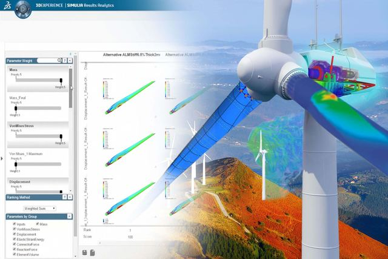
SIMULIA permet de simuler le comportement des produits avant leur fabrication. Les ingénieurs peuvent tester leur résistance, leurs performances et leur sécurité sans multiplier les prototypes physiques.